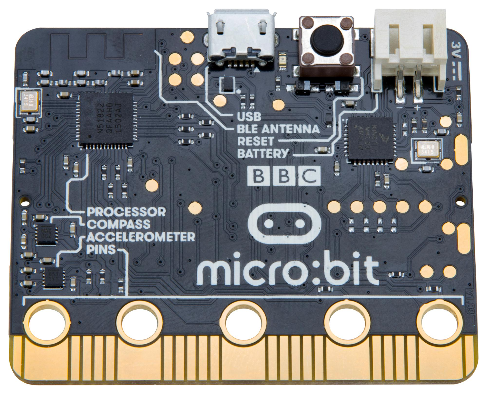
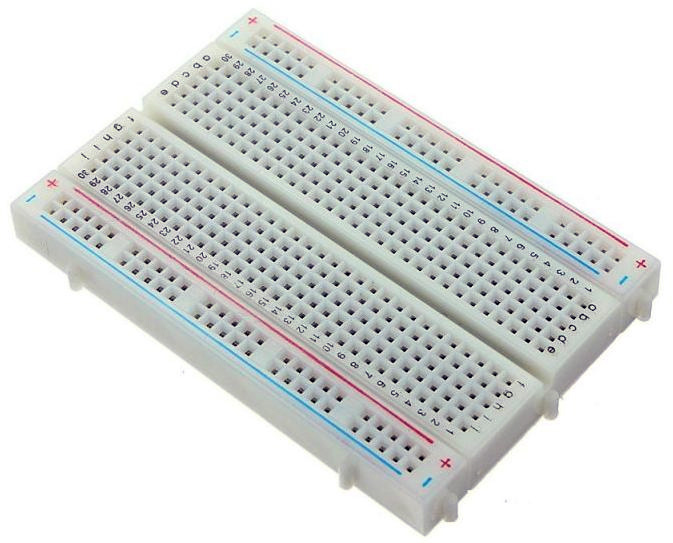
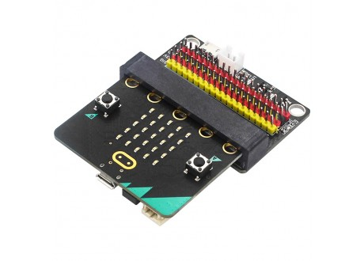
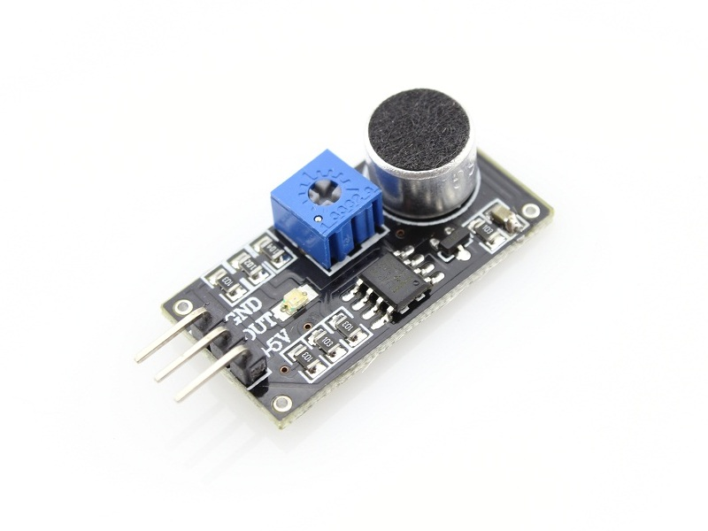
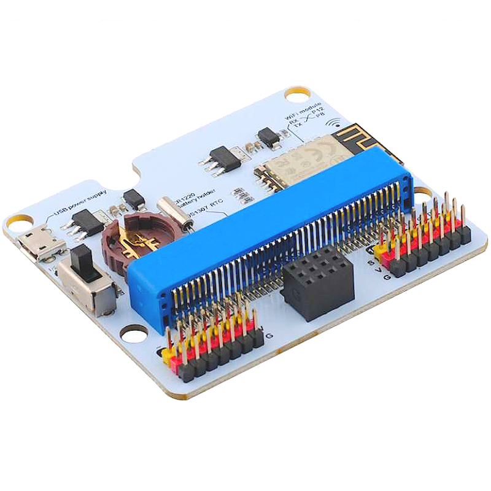
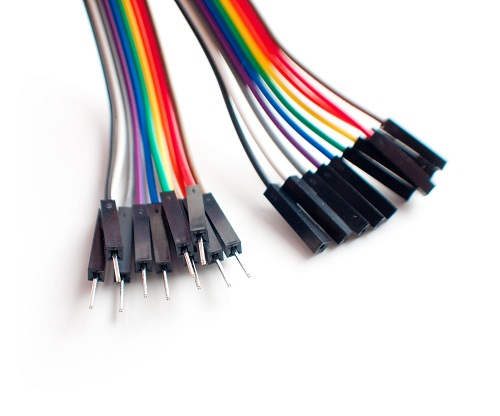
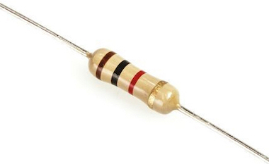
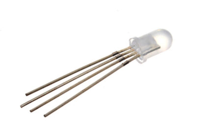

Documentación Técnica
Fecha: 11 de noviembre de 2025
Este documento contiene la documentación técnica para el proyecto STEAM del curso Laboratorio STEAM+ de la tecnicatura Redes y Software del ISBO de UTU año 2025.
Proyecto: Silencio Activo
1. Integrantes
- Guillermo Quevedo
- Fabrizio Jordan
- Mathias Lucero
- Nicola Barboza
2. Descripción
- Este proyecto consta de 2 microbits los cuales se comunican evaluando el ruido de un aula (para lo que se ideó) y medir el nivel de ruido mostrandolo con un led.
- Buscamos con este proyecto buscar la mejor forma de resolver un problema constante en las aulas el ruido, este no permite tener un aprendizaje adecuado con este proyecto queremos concientizar a los alumnos sobre sus propios ruidos y consecuencias de cada voz.
3. Materiales
| Imagen | Descripcion |
|---|---|
|  | 2x Microbit |
|  | Protoboard |
|  | Tarjeta de expancion |
|  | Sensor sonido (noise sensor del kit IoT:bit) |
|  | tarjeta de expakit IoT:bit |
|  | 5 cables macho y 4 hembras |
|  | 1 resistencia |
|  | led rgb |
4. Diseño Mecánico
- Nuestro proyecto, su parte mecánica, consiste básicamente en dónde se colocaría (por ejemplo, en una caja) y cómo se conectaría, si necesitaría un transformador, etc.
- Instrucciones de ensamblaje:
- Colocar cada Micro:bit en la tarjeta de expansión del kit IoT:bit.
- Conectar el sensor de sonido al Micro:bit usando los pines correspondientes (VCC, GND y señal en P0).
- Conectar el LED RGB a la placa mediante una resistencia de 220 Ω para protegerlo, asegurando que los pines de control se conecten correctamente al Micro:bit.
- El Micro:bit con sensor de sonido lo colocamos en una caja o soporte para mantenerlos fijos, asegurando que el sensor de sonido esté orientado hacia el aula
- El Micro:bit con protoboard deberá estar conectado a la computadora, y el otro Micro:bit con sensor de sonido a batería; asegurarse de que las baterías estén cargadas y colocadas correctamente.
- Probar todas las conexiones, verificando que el LED RGB y el sensor funcionen correctamente.

5. Diseño Electrónico
- En esta explicacion realizada en Tinkercad se ve como se realizaron las conecciones de cableados en los microbits sensores etc.

6. Diseño Software
- Descripción de cómo funciona la solución a nivel de software:
- El Micro:bit con el sensor de sonido lee de manera continua el nivel de sonido del aula y es enviada esa informacion al microbit conectado a la computadora.
- Cada Micro:bit lee de manera continua el nivel de sonido del aula a través del sensor.
- Los Micro:bit pueden comunicarse entre sí mediante radio para sincronizar la alerta de ruido en varias ubicaciones del aula.
- Bloques de código más importantes:
- Lectura del sensor de sonido: Captura el nivel de ruido y lo compara con un umbral predefinido.
- Control del LED RGB: Dependiendo del nivel de ruido, cambia el color del LED (por ejemplo, verde = bajo, amarillo = moderado, rojo = alto).
- Comunicación por radio: Envía el estado de ruido a otros Micro:bit para mantener la alerta sincronizada.
- Código fuente ejemplo en Python (MicroPython para Micro:bit):
- Microbit Emisor:
- Micro Receptor:
- Serial Reader
from microbit import *
import radio
def on_forever():
ruido = Environment.read_noise(AnalogPin.P1)
#serial.write_value("ruido", ruido)
radio.set_group(5)
radio.send_value("ruido", ruido)
if ruido > 10:
basic.show_string("W") # works
else:
basic.show_string("E") # error
basic.forever(on_forever)
from microbit import
import radio
radio_group = 5
def set_color(r, g, b): #set color in leds
pins.analog_write_pin(AnalogPin.P1, r) # P1 is the pin number 1 of the microbit/arduino
pins.analog_write_pin(AnalogPin.P2, g)
pins.analog_write_pin(AnalogPin.P4, b)
def sColor(color):
if color == "Red":
set_color(1023, 0, 0) # Red
elif color == "Green":
set_color(0, 1023, 0) # Green
elif color == "Orange":
set_color(1023, 466, 0) # Orange
elif color == "White":
set_color(1023, 1023, 1023) # White
else:
raise("Invalid Color.")
def radioReceiver(name, ruido):
if ruido <= 86:
sColor("Green") # Green
basic.show_string("G")
print("G")
basic.pause(300)
elif ruido > 86 and ruido <= 171:
sColor("Orange") # Orange, like in a traffic light
print("O")
basic.show_string("O")
basic.pause(300)
elif ruido > 171:
sColor("Red") # Red
print("R")
basic.show_string("R")
basic.pause(300)
else:
sColor("White") # White
print("W")
basic.show_string("W")
basic.pause(300)
def on_forever():
radio.set_group(radio_group)
radio.on_received_value(radioReceiver)
basic.forever(on_forever)
import time as t
from datetime import datetime
import serial
import serial.tools.list_ports as list_ports
import subprocess
import sys
import os
def openWebsite():
html_path = os.path.abspath('./microbit.html')
if sys.platform.startswith('linux'):
subprocess.run(['sudo', '-u', os.getenv('SUDO_USER', 'fabrizio'),
'xdg-open', html_path])
elif sys.platform.startswith('win'):
pass
subprocess.run(['start', html_path], shell=True)
elif sys.platform.startswith('darwin'):
pass
subprocess.run(['open', html_path])
else:
print("Sistema operativo no reconocido.")
PID_MICROBIT = 516
VID_MICROBIT = 3368
TIMEOUT = 0.1
def find_comport(pid, vid, baud):
ser_port = serial.Serial(timeout=TIMEOUT)
ser_port.baudrate = baud
ports = list(list_ports.comports())
for p in ports:
try:
if (p.pid == pid) and (p.vid == vid):
ser_port.port = str(p.device)
return ser_port
except AttributeError:
continue
return None
def main():
print('Buscando micro:bit...')
ser_micro = find_comport(PID_MICROBIT, VID_MICROBIT, 115200)
if not ser_micro:
print('micro:bit no encontrado')
return
else:
print("micro:bit encontrado. Abriendo servicio web...")
openWebsite()
ser_micro.open()
oldLines = []
line = ""
while True:
t.sleep(1.4)
nline = ser_micro.readline().decode('utf-8').strip()
if nline=="G":
line = "🟩"
elif nline == "R":
line = "🟥"
elif nline == "O":
line = "🟨"
else:
line = "⬜"
line += datetime.now().strftime(" %Y-%m-%d %H:%M:%S")
print(nline)
#oldLines += "" + line + "\n
"
if not line:
continue
if line == 'EXIT':
break
#
print(line)
oldLines.append(f"{line}
")
if len(oldLines) > 10:
oldLines.pop(0)
# Crea un HTML nuevo en cada lectura
with open('microbit.html', 'w') as f:
f.write(f"""
ser_micro.close()
print("EXIT from program")
sys.exit(0)
if __name__ == "__main__":
main()